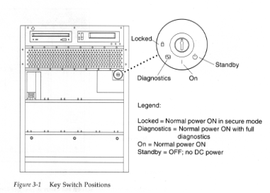
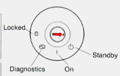
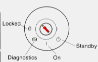
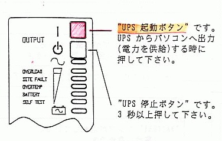

nileで定期的にやっている仕事のメモです。

nileの前面のふたを開け、鍵を入れてlock の位置まで回します。 これで、nile のboot が始まります。

%su #/usr/ucb/shutdown -h now ： ： >
と白い画面で">"プロンプトになったら鍵を入れてStandbyの位置まで回します。

#/usr/sbin/shutdown -y -g0 -i0
とすると待ち時間なしでシャットダウンします。
停電でUPSからの電力が供給されなくなり、nileが停止した場合、 以下の手順で再起動してください。

boot時に自動で起動するはずが、立ち上がってません。(2001.12.13) 手動で立ち上げてください。方法は↓のとおり。 Matlab, MatlabWebserver 用のapache は起動しているはずです。
Matlab のライセンスマネージャを自動起動するように設定していますが、 起動に失敗している時は手動で立ち上げてください。
#sh /etc/init.d/lmgrd start起動すると以下のようなプロセスが動いてればOK です。
matlab 23179 1 0 00:50:48 pts/5 0:00 csh -c umask 022; /var/tmp/lm_TMW12.ld -z -c /var/tmp/lm_TMW12.dat | sh - c 'wh
matlab 23181 23179 0 00:50:48 pts/5 0:00 /var/tmp/lm_TMW12.ld -z -c /var/tmp/lm_TMW12.dat
matlab 23182 23179 0 00:50:48 pts/5 0:00 sh -c while read line; do echo "$line" >> /var/tmp/lm_TMW12.log; done
matlab 23183 23181 0 00:50:49 ? 0:00 MLM -T nile 6.1 4 -c /var/tmp/lm_TMW12.dat
Matlab Webserber はMatlab のライセンスマネージャが起動していることを確認してから立ち上げてください。
# /etc/init.d/webserver start
matlab 23263 1 0 00:52:21 pts/5 0:00 /usr/local/matlab6p1/webserver/bin/sol2/matlabserver -s -m 3 -p 27009 -l /var/t matlab 23269 23263 0 00:52:21 pts/5 0:00 /bin/csh -f -c matlab -nodisplay -nosplash matlab 23270 23269 0 00:52:21 pts/5 0:05 /usr/local/matlab6p1/bin/sol2/matlab -nodisplay -nosplash
現在(2001.12.13)、Matlab Webserver のプロセスを3つ走らせるようにしているので、上の例の プロセスID 23269,23270 のプロセスと同じ物が3つあるはずです。
他の、起動確認方法としては、# /usr/local/matlab/webserver/webstat
MATLAB Web Server is up . . .
SERVER =
process table entries . . .
------------------------------------------------------------------
UID PID PPID C STIME TTY TIME CMD
(server): matlab 23263 1 0 00:52:21 pts/5 0:00 /usr/local/matlab6p1/webserver/bin/sol2/matlabserver -s -m 3 -p 27009 -l /var/t
(shell): matlab 23269 23263 0 00:52:21 pts/5 0:00 /bin/csh -f -c matlab -nodisplay -nosplash
(省略)
となっていれば起動しています。
Matlab Webserver 用にWebサーバ(/usr/local/apache_matlab)を立ち上げています。もし、それが起動していなかったら、以下のコマンドを実行してください。
# /usr/local/apache_matlab/bin/apachectl start
バックアップ用のshがパーティションごとに作成してあります。
シェルでバックアップを行った場合、ログはrootにメールで送られてきます。 ログの中に "/tmp/dump???.arc" とありますが、このファイルにはダンプ後の テープのデータ一覧が書かれています。中身がある＝ダンプ成功の目安として いれてあります。
/home, /project
/home は毎週日曜日、/project は毎月1日、15日に
Cronでバックアップをとっています。
/, /usr, /usr/local, /opt, /etc, /project2
気が付いたときにとっています。
/project2のバックアップ
基本はufsdump でとってますが、tar cvf 版を作成しておくと、
何かあったときに、他のOSのマシンでも読み出せるので便利。
バックアップ用メディア( DDS3, DDS4)とクリーニングテープ
空のメディアは gakkou, nikkou の本体が置いてあるあたりに箱に入ってます。
数が少なくなったら宇陀先生に言ってください。
一度 nile で使用したものは、nile本体のところにあります。
nileのバックアップはufsdumpコマンドでとっています。 テープからファイルを復元する場合は、ufsrestoreで復元してください。
ufsrestore
詳しくは Solaris2.6 Solarisのシステム管理(第一巻)のp609の第35章ファイルと ファイルシステムの復元の手法の部分を参照してください。
% sudo /usr/local/bin/makeuser アカウント名
で、作成。アカウント名がセンターにない場合は、ユーザ名を入力するように
促されるので、ローマ字で入力する(ex: Chinatsu Ito)。
後はパスワードを入力して終了。
共同研究者などの学外のユーザで、直接パスワードを渡せない場合は、 仮パスワードを登録しておいて、
% sudo passwd -x -1 アカウント名として、初回ログイン時に強制的にパスワードを変更するよう促すことにする。
From: admin@nile.ulis.ac.jp To: hogehoge@hogehoge.domain <アカウント名> 様 アカウントを作成しました。 仮パスワードとして、 <仮パスワード> を設定してあります。 初回ログイン時に強制的にパスワードを変更させるようにしましたので、 仮パスワードを使って telnet/ssh 等で一旦ログインし、 メッセージに従ってパスワードを変更してからご利用ください。 パスワードについては以下を参照してください。 http://nile.ulis.ac.jp/nile/basic.html#password 不明な点などありましたら、 admin@nile.ulis.ac.jp までお願いします。
ユーザ登録にセンターのpasswdファイルの情報を使っているので、
4月、5月ぐらい（センターの新規登録がおちついたころ）にファイルをもらってくる。
センターの/etc/passwd を nile:/etc/passwd.centerにコピーし、
それ以前のpasswd.center は別名をつける。
パーミッションは444
自分で作業しておいて、うろ覚えなのですが、2001年4月の場合
# mv passwd.center passwd.center.200104
としてあります。
今までのを見るに、"passwd.center.新しいバージョンをもらってきた年月"に mv したようです。
ゼミの連絡用などの用途でメーリングリストを運営できるようにfmlを導入しています。 メーリングリストの作成依頼があった場合には、以下の作業をroot権限で実行する。 あとは、/usr/local/fml/makefmlをML管理者に実行してもらう。
以下では、ML名: mui-zemi、ML管理者: kanpan を例に挙げます。
% sudo -u fml /usr/local/fml/makefml newml mui-zemi
% sudo chown -R kanpan /var/spool/ml/mui-zemi
% sudo vi /var/spool/ml/mui-zemi/aliases
:%s/fml/kanpan/
:wq
/etc/aliasesにメーリングリストを登録
% sudo vi /etc/aliases
:r/var/spool/ml/mui-zemi/aliases
:wq
/etc/aliases の設定内容を更新
% sudo newaliases
cap は現在運用していません 2001.04
CAPは、Appletalkでファイルを共有するためのアプリケーションですが、 nileが起動される時に自動的に立ち上がらないので、以下の手、順で 立ち上げてください。
nile# /usr/local/cap/aarpd "hme0" "ULIS-kenkyu-net-EthertalkP2" nile# /usr/local/cap/atis abInit: [ddp: 0.255, 18] starting 22:27:46 06/28/98 Reply num max for lkup reply is 5 (based on 104) ### ここで、15秒ほど待つ ### nile# /usr/local/cap/snitch -S -f "nile" nile# /usr/local/cap/aufs -U 10 -V /usr/local/lib/cap/afpvols -n 'atnile' Apple Unix File Server (atnile:AFPServer@*) starting nile# exit
NISは現在停止してますが、残してあります。
NISのこと
NISのサーバーは、自動的に起動されますが、そのままでは通常の働きをしないので、
以下のような手順で立ち上げ直してください。
nile# /usr/lib/netsvc/yp/ypstop nile# /usr/lib/netsvc/yp/ypserv nile# /usr/lib/netsvc/yp/ypbind -ypsetme nile# /usr/lib/netsvc/yp/ypxfrd nile# /usr/lib/netsvc/yp/rpc.yppasswdd -m nile# /usr/lib/netsvc/yp/rpc.ypupdated
これで、NISが正常に動作します。